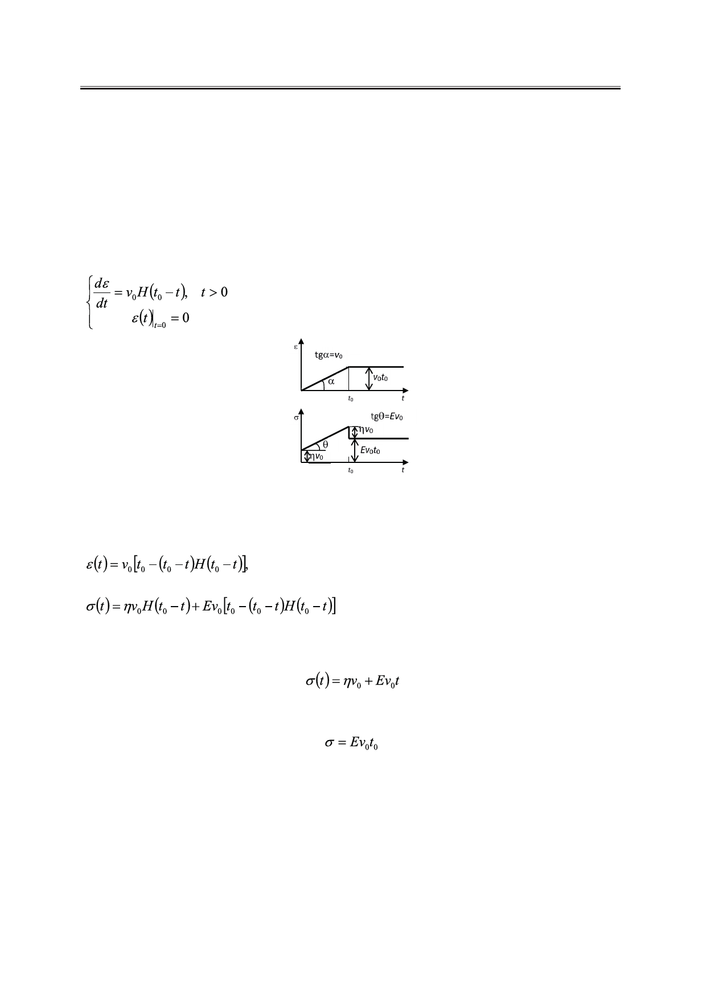

Новые функциональные соотношения для линейных реологических моделей Максвелла
и Кельвина-Фогта
Так как мгновенные возникновение и сокращение деформации отсутствуют, то при
снятии напряжения в момент времени t0 деформация должна быть непрерывной, что и
подтверждают приведенные соотношения (рис. 5).
Постоянная скорость деформации (модель Кельвина-Фогта)
Модель Кельвина-Фогта не допускает мгновенной деформации, однако допускает де-
формацию с постоянной скоростью v0.
Рассмотрим следующий режим нагрузки (рис. 6):
(18)
Рис. 6. Графики зависимости напряжения и деформации от времени в случае
действия постоянной скорости деформации на модель Кельвина-Фогта.
Уравнения (15) и (18) приводят к соотношениям:
t > 0,
(19)
, t > 0.
(20)
и в такой же форме позволяют описать напряжение для времени t < t0:
и для времени t > t0:
.
Использование обобщенных функций позволяет рассмотреть и более сложные трехэ-
лементные модели, например, с двумя пружинами и одним демпфером и наоборот. Прин-
ципиальная сторона подхода при этом не меняется, математические выкладки практически
не усложняются.
Предложенные соотношения могут быть использованы в реологии как обобщающая
форма записи, содержащая известные частные случаи. Настоящая работа представляет
также методический интерес, особенно для кафедр полимерного профиля.
Автор благодарит профессора Карташова Э.М. за предоставленную информацию.
58
Российский технологический журнал 2017 Том 5 № 5